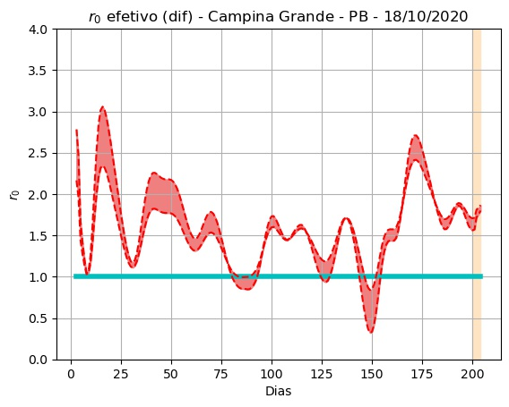

Campina Grande - PB - 18/10/2020.
Detalhes técnicos, aqui. Clique aqui para uma versão em PDF desta análise.
População: 409.731.
Início e fim da série: 2020-03-27 e 2020-10-17. (205 elementos - 29 semanas e 2 dias).
Número de casos totais e mortes: 13.579 e 398. (33.141 e 971 por milhão de habitantes, respectivamente.)
r0 (integral) efetivo médio (duas últimas semanas - três dias de atraso): 1,74 (std = 0,19).
Último intervalo para r0 (três dias de atraso): (1,45 : 1,64).
Limiar imunidade de grupo nR (baseado no valor de r0 (integral) efetivo médio) = 0,43.
Previsão do número total de casos para os próximos 5 dias: 13.601, 13.624, 13.647, 13.669, 13.692.
